Nanyo
Nanyo · Yamagata
Nanyo
Highlighted on the Yamagata map.
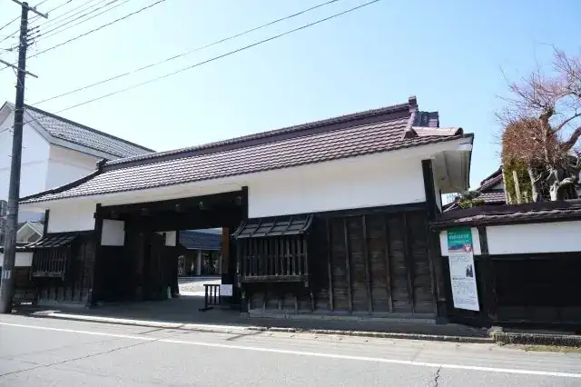
Stay
赤湯温泉 森の湯
Akayu Onsen Mori No Yu
Onsen lodging in Nanyo, Yamagata.
熊野大社の麓 地酒と肴で「緑」を繋ぐ宿 いとや旅館
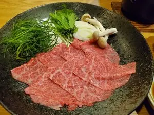
Kumano Taisha No Fumoto Jizake To Sakana De ( Midori ) Wo Tsunagu Yado Itoya Ryokan
Ryokan inn in Nanyo, Yamagata.
赤湯温泉 美術館のような宿 旅館大和屋
Akayu Onsen Bijutsukan Noyouna Yado Ryokan Yamatoya
Ryokan inn in Nanyo, Yamagata.
赤湯温泉 大正ロマン香る癒しの宿 丹波館
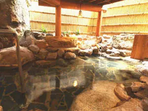
Akayu Onsen Taishou Roman Kaoru Iyashi No Yado Tanba Kan
Onsen lodging in Nanyo, Yamagata.
赤湯温泉 江戸時代中期創業のレトロ宿 旅館大文字屋
Akayu Onsen Edojidai Chuuki Sougyou No Retoro Yado Ryokan Oomoji Ya
Ryokan inn in Nanyo, Yamagata.
赤湯温泉 むつみ荘
Akayu Onsen Mutsumi Sou
Onsen lodging in Nanyo, Yamagata.
赤湯温泉 丹泉ホテル
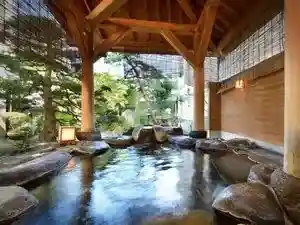
Akayu Onsen Tan Izumi Hoteru
Hotel in Nanyo, Yamagata.
Dining
山形座 瀧波
Yamagata Za Taki Nami
Ryokan restaurant in Nanyo, Yamagata.
Stanza della SINCERITA (OSTERIA SINCERITA)
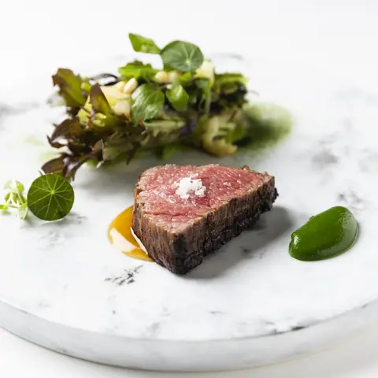
Stanza Della Sincerita (Osteria Sincerita )
Italian restaurant in Nanyo, Yamagata.
櫻湯山茱萸
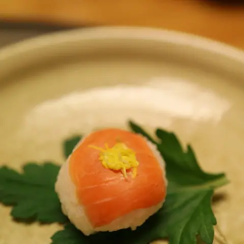
Sakurayu Yama Gumi
Ryokan restaurant in Nanyo, Yamagata.
赤湯ラーメン 龍上海 赤湯本店
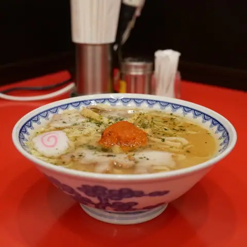
Akayu Raamen Ryuu Shanhai Akayu Honten
Ramen shop in Nanyo, Yamagata.
四代手打 源蔵そば
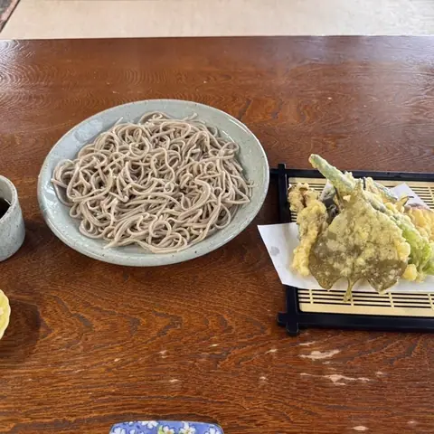
Shi Dai Teuchi Genzou Soba
Soba restaurant in Nanyo, Yamagata.
まるひろ
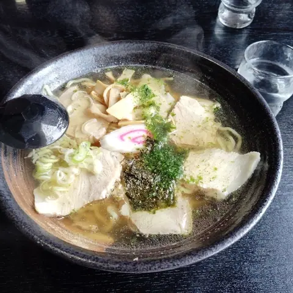
Maruhiro
Ramen shop in Nanyo, Yamagata.
麺屋 葵
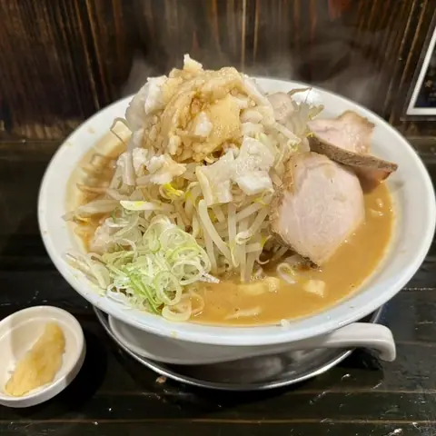
Men Ya Aoi
Ramen shop in Nanyo, Yamagata.
いもせ食堂
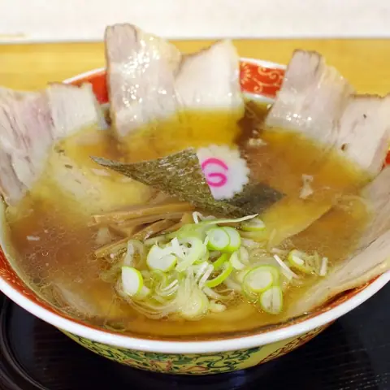
Imose Shokudou
Ramen shop in Nanyo, Yamagata.
ジェラート エン
Jieraato En
Gelato and ice-cream shop in Nanyo, Yamagata.
みづき庵
Mizuki Iori
Soba restaurant in Nanyo, Yamagata.
食楽亭 旭屋
Shoku Raku Tei Asahiya
Japanese restaurant in Nanyo, Yamagata.
囲ろ川
I Ro Kawa
Ramen shop in Nanyo, Yamagata.
田中屋
Tanaka Ya
Japanese sweets shop in Nanyo, Yamagata.
小滝そば ゆかりや
Otaki Soba Yukariya
Soba restaurant in Nanyo, Yamagata.
金ちゃんラーメン 南陽店
Kin Chan Raamen Nanyou Mise
Ramen shop in Nanyo, Yamagata.
麺や 兼蔵
Men Ya Kanezou
Ramen shop in Nanyo, Yamagata.
食事処ふたば
Shokuji Tokoro Futaba
Shokudo diner in Nanyo, Yamagata.
旨いとんかつ竹亭 宮内店
Umai Tonkatsu Chikutei Miyauchi Mise
Tonkatsu restaurant in Nanyo, Yamagata.
山映
Yama Ei
Shokudo diner in Nanyo, Yamagata.
よりみち
Yorimichi
Ramen shop in Nanyo, Yamagata.
楼蘭
Rouran
Chinese restaurant in Nanyo, Yamagata.
icho cafe
Icho Cafe
Café in Nanyo, Yamagata.
上杉の御湯 御殿守
Uesugi No O Yu Goten Shu
Ryokan restaurant in Nanyo, Yamagata.
うめつ食堂
Umetsu Shokudou
Shokudo diner in Nanyo, Yamagata.
Sights
Kumano Taisha Shrine
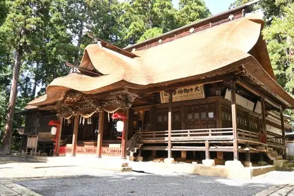
Nanyo Chrysanthemum Festival (Miyauchi venue)
Nanyo Sky Park (Experience on Paraglider)
Nanyo Sky Park (Experience on Paraglider)
Eboshiyama Park
The "100 Best Cherry Blossom Spots in Japan" spread out in the mountains behind Akayu Hot Springs.
Sosho Rose Park
Set on a hill overlooking the Yonezawa Basin and known as the 'rose garden of fragrance', with 6,000 roses of 340 varieties, including many rare old roses. Kumano Taisha shrine is nearby.
Kuguri Fall
A 14 m waterfall in Nanyo's Kotaki district that pours through a hole in the rock 5 m high and 4.6 m wide, hence the name. It is surrounded by natural beech forest, with skunk cabbage in late spring and autumn colours.
Sakai Winery
Founded in 1892, the oldest winery in Tohoku, still making wine the traditional way: unfiltered, unfined and unpasteurised. Since 2004 the family has farmed its own steep, gravelly vineyard at Torigozaka.